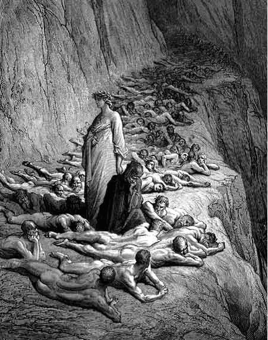

Obra de Dante
Purgatório de Dante
Purgatório é o lugar do além onde as almas purificam seus pecados para poder aspirar ao céu. Essa ideia, muito arraigada no imaginário medieval, é a que Dante assume. Por invocação das Musas, o poeta chega às margens da ilha do purgatório, localizada no hemisfério austral. Lá eles encontram Catão de Útica, a quem Dante representa como o guardião das águas. Catão os prepara para a travessia pelo purgatório.
Antepurgatório
Os poetas chegam ao antepurgatório na barca impulsionada por um anjo. Eles encontram o músico Casella e outras almas. Casella canta uma canção do poeta. Ao chegar, Catão os repreende e o grupo se dispersa. Os poetas notam a presença dos convertidos tardios e dos excomungados por sua rebeldia (negligentes procrastinadores da conversão, os mortos repentinamente e os mortos violentamente). Durante a noite, enquanto Dante dorme, Lucia o transporta até a porta do purgatório. Ao acordar, o guardião grava sete letras "P" em sua testa em alusão aos pecados capitais, marcas que desaparecerão à medida que ele ascende ao céu. O anjo abre as portas com as chaves místicas do arrependimento e conversão.
Primeiro Círculo(Soberba)
O primeiro círculo do purgatório é reservado ao pecado da soberba. Lá, eles contemplam exemplos escultóricos de humildade, como a passagem da Anunciação. Mais adiante, eles também contemplam imagens do orgulho em si, como as passagens da Torre de Babel. Dante perde a primeira letra "P".
Segundo Círculo(Inveja)
Este círculo é reservado para aqueles que purgam a inveja. Novamente, eles contemplam cenas exemplares de virtude encarnadas na Virgem Maria, no próprio Jesus pregando o amor ao próximo ou em passagens da antiguidade.
Terceiro Círculo(Ira)
O terceiro círculo é destinado ao pecado da ira. Virgílio explica a Dante o sistema moral do purgatório e reflete sobre o amor mal conduzido. O ponto central é afirmar o amor como princípio de todo o bem.
Quarto Círculo(Preguiça)
Este círculo é reservado ao pecado da preguiça. Acontece uma importante discussão sobre o livre arbítrio e sua relação com as ações humanas que surgem do amor, tanto para o bem quanto para o mal. Também são lembrados os efeitos da preguiça.
Quinto Círculo(Ganância)
No quinto círculo, purga-se a ganância. Em um patamar do purgatório, os poetas contemplam exemplos da virtude da generosidade. O purgatório treme devido à libertação da alma de Estácio, um mestre e poeta latino que presta homenagens a Virgílio.
Sexto Círculo(Gula)
Neste círculo, purga-se o pecado da gula. Estácio conta que, graças às profecias da IV Écloga de Virgílio, se libertou da ganância e acolheu o cristianismo em segredo. No entanto, foi esse silêncio que lhe valeu a condenação. Os penitentes estão sujeitos à fome e sede. Dante se surpreende ao ver Foresto Donati salvo pelas orações de sua esposa.
Sétimo Círculo(Luxúria)
Reservado aos luxuriosos, Virgílio explica a geração do corpo e a infusão da alma. A partir de um círculo em chamas, os luxuriosos cantam louvores à castidade. Eles encontram os poetas Guido Guinizelli e Arnaut Daniel. Este último pede oração a Dante. Um anjo anuncia que Dante deve atravessar as chamas para chegar ao paraíso terrestre. Virgílio o entrega ao seu livre arbítrio.
Paraíso Terrestre
No paraíso terrestre, Matilde, uma virgem medieval, oferece-se para guiá-lo e mostrar as maravilhas do paraíso. Eles iniciam uma jornada pelo rio Letes e aparece uma procissão precedida pelos sete dons do Espírito Santo. A procissão representa o triunfo da Igreja. Beatriz aparece e o incita ao arrependimento. O poeta é submerso nas águas do Eunoe e se regenera.